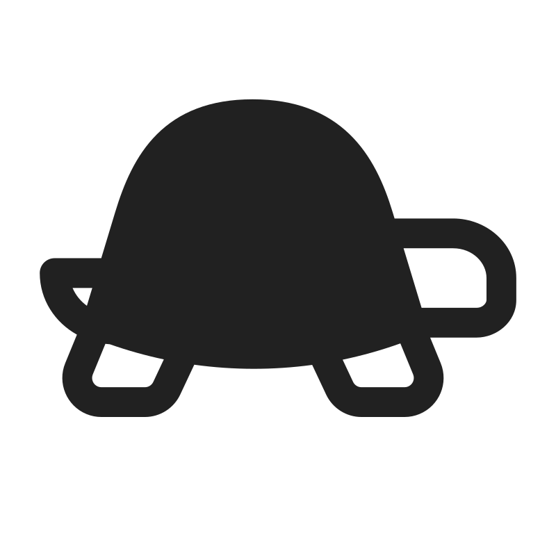

Types of Tiles
-
Airportsadd to your final score and allow the plane to refuel
Points: Airports are the main way to score points and are worth twice as much as tailwinds towards your final flight efficiency.
Refuel: The airplane's fuel is reset to three, allowing the bot to travel three tiles after leaving the airport.
Code: To refuel and score a point, the Ozobot must do the "Spin", "Tornado", or a flashing light command on an airport tile.
-
Tailwindsspeed up the plane and add to our final score
Points: Passing through more tailwinds than headwinds will add points to your flight efficiency.
Code (Optional): When passing through a tailwind, have the Ozobot speed up! If the Ozobot is already going fast, you do not have to speed up again.
-

Headwindsslow down the plane and subtract from our final score
Points: Passing through more tailwinds than headwinds will add points to your flight efficiency.
Code (Optional): When passing through a headwind, have the Ozobot slow down! If the Ozobot is already going slow, you do not have to slow down again.
-
Impassablethese tiles cannot be crossed
Maybe there is a mountain in the way, or a restricted air space, but our airplane does not have the ability to cross through this location!
The Ozobot starts with three fuel and can travel three tiles before it must refuel on an airport. Passing through a tile a second time counts toward total spaces moved but does not score its color again.